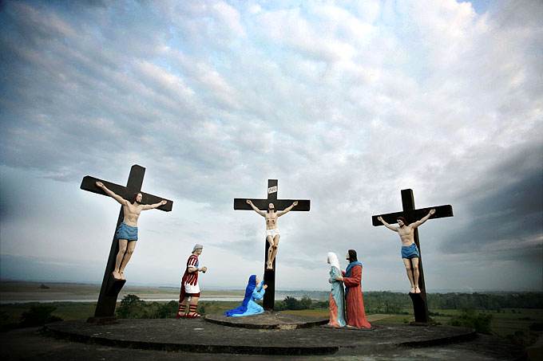
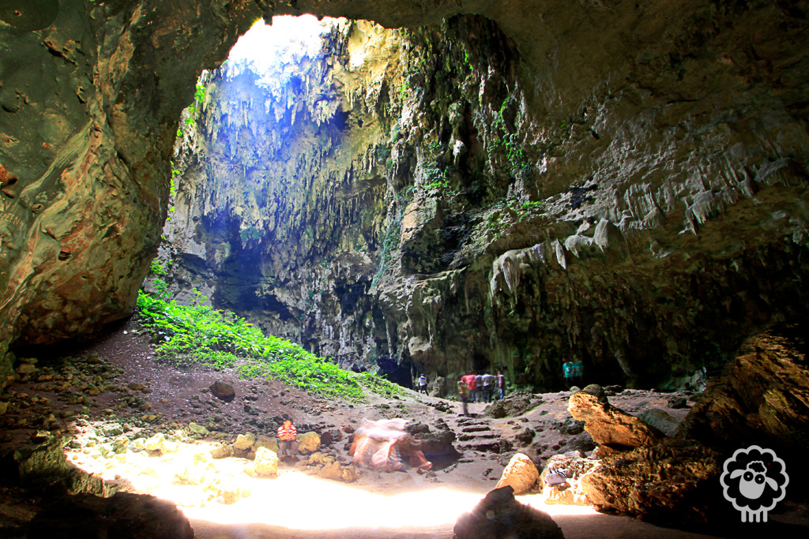
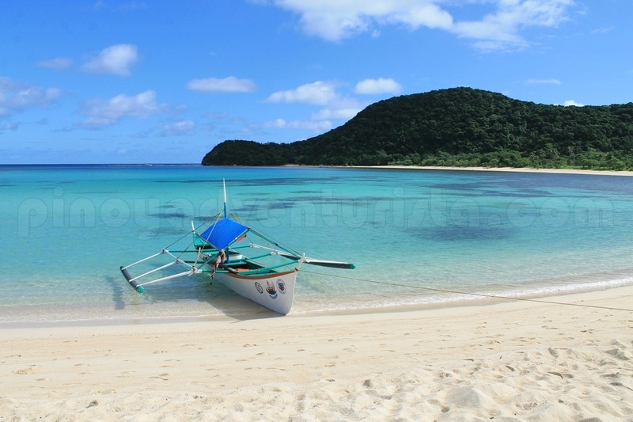
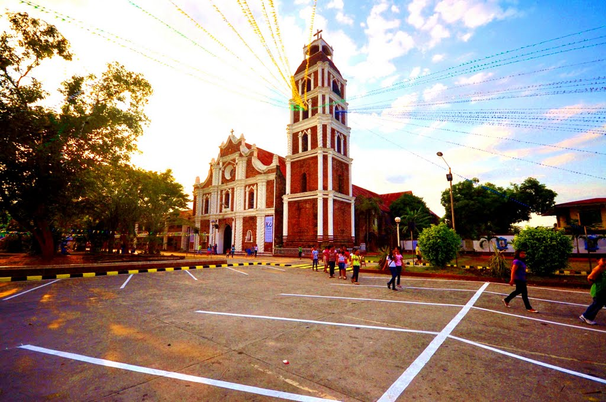
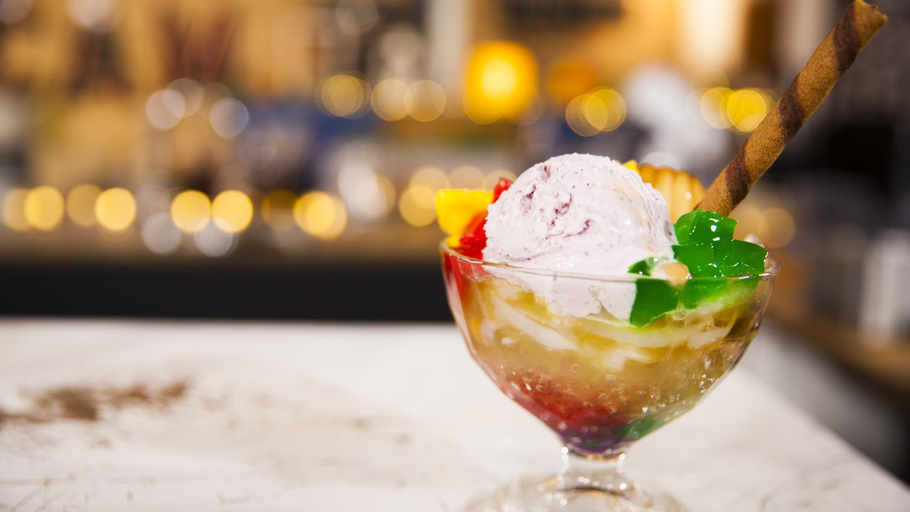

Calvary Hills is a popular destination of Catholics, Philippines.
It is located in a sprawling eleven-hectare of rolling hills overlooking the
Cagayan River.

The Callao Cave is an important part of the country's pre-historic past as a human
metatarsal was found in this cave last 2007 which antedates to about 67,000 years.

One of the most underrated places in Camotes Islands, located in Cebu province, is Bakhaw
Beach. Even though it’s a public beach, it rarely gets crowded

The Saint Peter Metropolitan Cathedral, also known as the Tuguegarao Cathedral, is an
18th-century Baroque church located along Rizal Street,
Philippines.

Halo-halo is a favorite Filipino dessert or snack because it is cold and refreshing,
perfect for beating the tropical heat
that exists almost year round in the
Philippines.
Pancit Batil Patung is a popular noodle dish in Tuguegarao City, Cagayan. It is composed
of two parts: the noodles with toppings, and the sauce which looks like an egg drop soup.
About The Developer
Who Am I
I'm Mohammed Jamaludeen , an aspiring Web Developer from India
Education
Currently pursuing my Bachelor's degree in the stream of IT in KIT, Coimbatore India